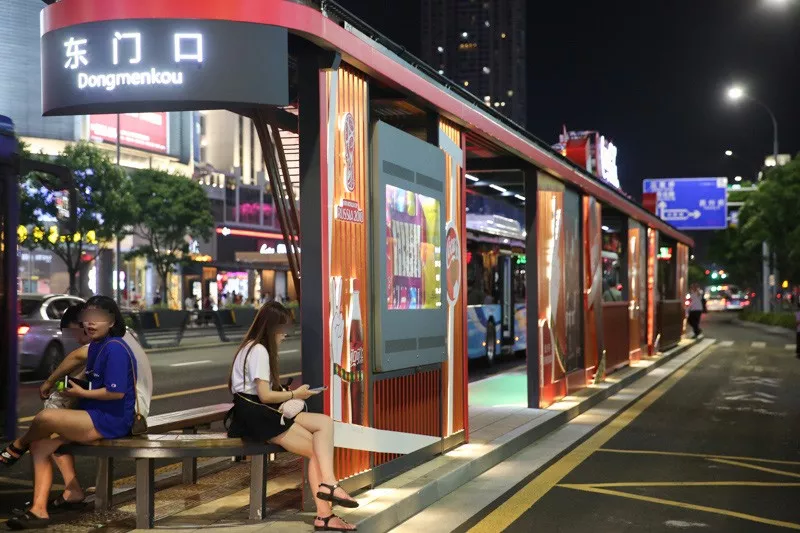

> 东门口
这是一个可以逛街，吃饭，看电影的地方
宁波生活的缩影
地上，宁波这座城市拥有近200万辆机动车。
地下，每天有30万人穿梭在1、2号线之间。
从早到晚，由西向东，家里到公司，公司去饭馆，出差，上班、旅行、求职、就医……不断行进的人们让城市得以正常运转。
这其中，中山东路算得上是宇宙的大动脉，而鼓楼→东门口，则是宇宙的核心枢纽。这段总长度不过一公里多些的路，从90年代起就被称为浙东第一大街。很多很多年以前，从久久天桥被拆开始，一大批在恒隆中心上班的白领们每天上班的第一件事情就是看看楼下开挖的路面，难免担心地基下沉的风险。
但是，吐槽了八年之后，这里仍旧是最热闹的地方。解放路、三江口、地铁1-2号线，都选择在此交汇。
一个城市的不同板块，要比楼哪里高，房价哪里贵，但最终还是要看人哪里多。这一点，晚上的东新和南商，都自惭形秽。
恒隆中心、世纪广场、财政局上班的人们，在日日夜夜期盼后，曾经辉煌的临街旺铺终于在去年开出了宁波比较早的7-11，隔壁的奶茶店换了好几轮，只有文峰国际美发店生意一直那么好。老板在门口贴着标语：“要让自己幸福，先要让别人幸福”，不知是不是他的成功秘诀。老司机们爱去巷子里的富浩饭店，而年轻人则要去北边的府桥街排队。欧阳小姐门口的板凳，看上去就像阿根廷世界杯的替补席，队伍太久，不知何时有上场的机会。生意好得如同当年对面的四合院网吧，可惜现在的四合院子一直封闭起来了，城市之光书店也消失了很久。
餐饮店家换了一轮又一轮，真正的常青树还是沙县、香哲和两家羽毛球拍店。封闭了很久之后，阳光广场也终于回来了，一到傍晚是老人家们乘凉和广场舞的天下。
从府桥街走到县前街、国医街，如果说这个城市里哪里看起来能有点香港的味道，大概就是这儿了。各种商务、快捷酒店林立，是踏入这个城市最经济方便的住宿所在。在很长的时间里，中山大厦、平安大厦、汇金大厦、苍水大厦……这些写字楼的白领们午饭都是在国医街解决的。可惜店面现在都被收回了，只剩下一些零星的烧鸭面、嵊州小吃、千里香馄饨。搞得光明钟表修理也卖起了鸡蛋饼。
傍晚夕阳下,85C°C又暂停营业了，剩下隔壁的快餐店还在循环播放着：“从此，人们亲切地称他为老娘舅……”新东方楼下，这里曾经是雅戈尔旗下GY的旗舰店，品类超多、动不动就打折，不少男士在这里买过结婚那天的礼服。遗憾后来也不开了。如此旺铺，不知道王小姐现在一天要接到几个电话。
从鼓楼一路过来，以开明街为界，世界就忽然变得商业、敞亮起来.霓虹闪烁，人头攒动，新来这座城市的每一个人，都期望在这里可以找到一些机会。
等到太阳下山，挑着莲蓬的小贩穿梭在斑马线上，他们是最熟悉购买力的，从鼓楼到东门口，或者钻入地下，绝不去其他地方。和行走的小贩一样，天一豪景、红帮大厦、华联、中农信、培罗成大楼，哪怕周末也总亮着几盏加班的灯。老板交代的差事，客户要改的方案……很多刚入行的年轻人在楼里吃着外卖，在胃病缠上之前，他们最迟也会在晚上8-9点钟，去楼下的东鼓道吃个饭。
总有加班的灯,天一豪景楼下，是东鼓道的12号入口，围挡上的标语鼓励着每个深夜加班，追逐梦想，濒临崩溃的灵魂。
“时不我待，只争朝夕。”
12号地铁口的加班狗…
12号入口，一共91步楼梯，或许是宁波去往地下最长的通道。
周边上班的白领，放暑假的学生，东门银泰的销售，天一广场的情侣……以及鼓楼、东门口，两个地铁站途经的人群，走出闸机，一起挤进这座地下城。
东门口站,鼓楼站。这个打通了两个地铁站的地下商业体，是这个城市最特别的逛街地点。
地面、B1、B2……三层的空间，中山东路如一个标准的汉堡包，人们在此消遣时光，约会谈情。或坐在旋转火锅旁，或煮一份不二烫捞，或要一碗叶饭的猪油捞饭，喝一杯脏脏茶……
这座地下城，是白领们的午餐去处，是加班族的深夜食堂，是休闲逛街人群的新奇世界。只有外卖小哥，必须锁好电瓶车，上上下下，跑了一趟又一趟，成为拿餐运动量最大的区域……
偶尔的周末，路过这里，会看到通道上布置的世界杯主题。在入口，关心一下赛程，然后感叹已经无缘八强的德国、阿根廷、西班牙……
在这里，也会偶遇形形色色的年轻人，青春活力的面孔，看一会快闪街舞，驻足停留。
等到再晚一些，地铁口发传单的小伙子，地下巡逻的保安，开往清水浦列车上的大学生，赶去机场的生意人，星期天加班到21点的白领，在东门口等15路公交的姑娘……都会从这里散去，去往他们的下一个目的地。或赶路，或暂作停留。
日复一日，从鼓楼→东门口，这个长760米的狭长地下城里，第二天又会涌入新的8万人。